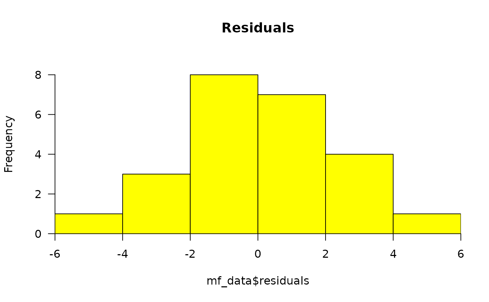
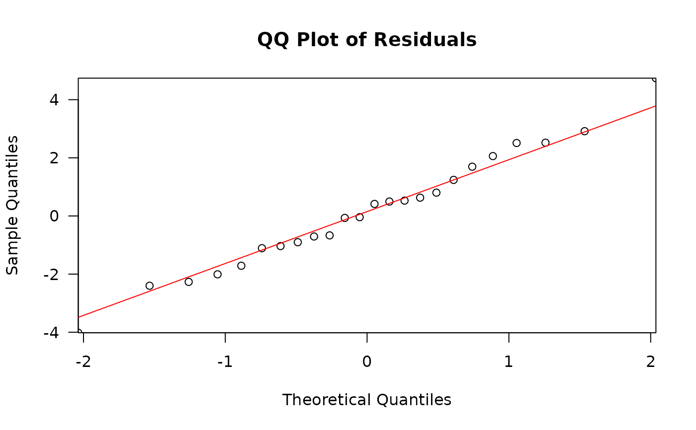
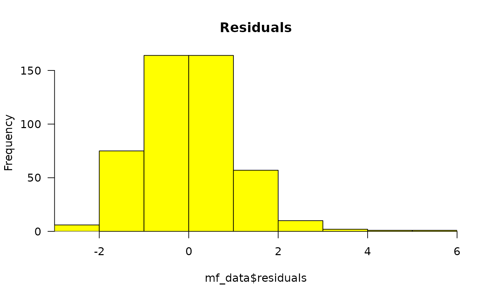
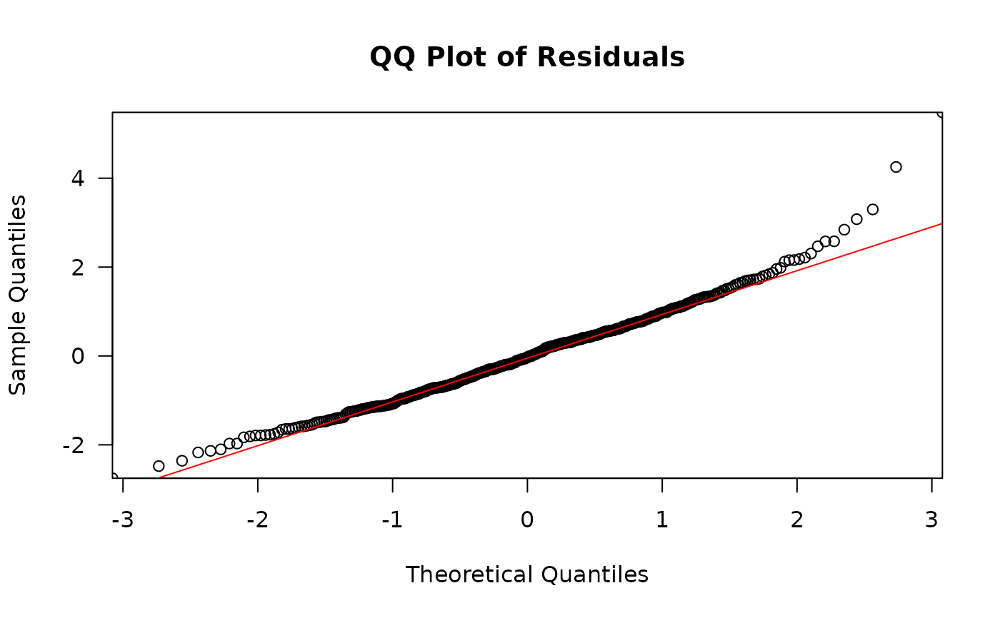

Perform linear modelling on mutation frequency for given fixed and random effects
Source:R/model_mf.R
model_mf.Rdmodel_mf will fit a linear model to analyse the effect(s) of given
factor(s) on mutation frequency and perform specified pairwise comparisons.
This function will fit either a generalized linear model (glm)
or, if supplied random effects, a generalized linear mixed-effects model
(glmer). Pairwise comparisons are conducted using the doBy
library (esticon) and estimates are then back-transformed. The
delta method is employed to approximate the back-transformed
standard-errors. A Sidak correction is applied to adjust p-values for
multiple comparisons.
Usage
model_mf(
mf_data,
fixed_effects,
test_interaction = TRUE,
random_effects = NULL,
reference_level,
muts = "sum_min",
total_count = "group_depth",
contrasts = NULL,
cont_sep = "\t",
...
)Arguments
- mf_data
The data frame containing the mutation frequency data. Mutation counts and total sequencing depth should be summarized per sample alongside columns for your fixed effects. This data can be obtained using
calculate_mf(summary=TRUE).- fixed_effects
The name(s) of the column(s) that will act as the fixed_effects (factor/independent variable) for modelling mutation frequency.
- test_interaction
a logical value. Whether or not your model should include the interaction between the
fixed_effects.- random_effects
The name of the column(s) to be analysed as a random effect in the model. Providing this effect will cause the function to fit a generalized linear mixed-effects model.
- reference_level
Refers to one of the levels within each of your fixed_effects. The coefficient for the reference level will represent the baseline effect. The coefficients of the other levels will be interpreted in relation to the reference_level as deviations from the baseline effect.
- muts
The column containing the mutation count per sample.
- total_count
The column containing the sequencing depth per sample.
- contrasts
a data frame or a filepath to a file that will provide the information necessary to make pairwise comparisons between groups. The table must consist of two columns. The first column will be a group within your fixed_effects and the second column must be the group that it will be compared to. The values must correspond to entries in your mf_data column for each fixed effect. Put the group that you expect to have the higher mutation frequency in the 1st column and the group that you expect to have a lower mutation frequency in the second column. For multiple fixed effects, separate the levels of each
fixed_effectof a group with a colon. Ensure that allfixed_effectsare represented in each entry for the table. Seedetailsfor examples.- cont_sep
The delimiter for importing the contrast table file. Default is tab-delimited.
- ...
Extra arguments for glm or glmer. The
glmerfunction is used when arandom_effectis supplied, otherwise, the model uses theglmfunction.
Value
Model results are output as a list. Included are:
model_data: the supplied mf_data with added column for the Pearson's residuals of the model.
summary: the summary of the model.
anova: the analysis of variance for models with two or more effects. Anova
(model)residuals_histogram: the Pearson's residuals plotted as a histogram. This is used to check whether the variance is normally distributed. A symmetric bell-shaped histogram, evenly distributed around zero indicates that the normality assumption is likely to be true.
residuals_qq_plot: the Pearson's residuals plotted in a quantile-quantile plot. For a normal distribution, we expect points to roughly follow the y=x line.
point_estimates_matrix: the contrast matrix used to generate point-estimates for the fixed effects.
point_estimates: the point estimates for the fixed effects.
pairwise_comparisons_matrix: the contrast matrix used to conduct the pairwise comparisons specified in the
contrasts.pairwise_comparisons: the results of pairwise comparisons specified in the
contrasts.
Details
fixed_effects are variables that have a direct and constant effect on the
dependent variable (ie mutation frequency).They are typically the
experimental factors or covariates of interest for their impact on the
dependent variable. One or more fixed_effect may be provided. If you are
providing more than one fixed effect, avoid using correlated variables;
each fixed effect must independently predict the dependent variable.
Ex. fixed_effects = c("dose", "genomic_target", "tissue", "age", etc).
Interaction terms enable you to examine whether the relationship between the dependent and independent variable changes based on the value of another independent variable. In other words, if an interaction is significant, then the relationship between the fixed effects is not constant across all levels of each variable. Ex. Consider investigating the effect of dose group and tissue on mutation frequency. An interaction between dose and tissue would capture whether the dose response differs between tissues.
random_effects account for the unmeasured sources of statistical variance that
affect certain groups in the data. They help account for unobserved
heterogeneity or correlation within groups. Ex. If your model uses repeated
measures within a sample, random_effects = "sample".
Setting a reference_level for your fixed effects enhances the interpretability
of the model. Ex. Consider a fixed_effect "dose" with levels 0, 25, 50, and 100 mg/kg.
Intuitively, the reference_level would refer to the negative control dose, "0"
since we are interested in testing how the treatment might change mutation
frequency relative to the control.
Examples of contrasts:
If you have a fixed_effect "dose" with dose groups 0, 25, 50, 100,
then the first column would contain the treated groups (25, 50, 100), while
the second column would be 0, thus comparing each treated group to the control group.
25 0
50 0
100 0
Alternatively, if you would like to compare mutation frequency between treated dose groups, then the contrast table would look as follows, with the lower dose always in the second column, as we expect it to have a lower mutation frequency. Keeping this format aids in interpretability of the estimates for the pairwise comparisons. Should the columns be reversed, with the higher group in the second column, then the model will compute the fold-decrease instead of the fold-increase.
100 25
100 50
50 25
Ex. Consider the scenario where the fixed_effects
are "dose" (0, 25, 50, 100) and "genomic_target" ("chr1", "chr2"). To compare
the three treated dose groups to the control for each genomic target, the
contrast table would look like:
25:chr1 0:chr1
50:chr1 0:chr1
100:chr1 0:chr1
25:chr2 0:chr2
50:chr2 0:chr2
100:chr2 0:chr2
Troubleshooting: If you are having issues with convergence for your generalized linear mixed-
effects model, it may be advisable to increase the tolerance level for convergence
checking during model fitting. This is done through the control argument for
the lme4::glmer function. The default tolerance is tol = 0.002. Add this
argument as an extra argument in the model_mf function.
Ex. control = lme4::glmerControl(check.conv.grad = lme4::.makeCC("warning", tol = 3e-3, relTol = NULL))
Examples
# Example 1: Model MFmin by dose
example_file <- system.file("extdata", "Example_files",
"example_mutation_data_filtered.rds",
package = "MutSeqR")
example_data <- readRDS(example_file)
mf_example <- calculate_mf(mutation_data = example_data,
cols_to_group = "sample",
retain_metadata_cols = "dose")
#> Performing internal depth correction to prevent double-counting...
#> Internal depth correction complete.
#> Joining with `by = join_by(sample)`
#> Joining with `by = join_by(sample)`
# Create a contrasts table to define pairwise comparisons
# We will compare all treated groups to the control group
contrasts <- data.frame(col1 = c("12.5", "25", "50"),
col2 = c("0", "0", "0"))
# Fit the model
model1 <- model_mf(mf_data = mf_example,
fixed_effects = "dose",
reference_level = "0",
muts = "sum_min",
total_count = "group_depth",
contrasts = contrasts)
#> Reference level for factor dose : 0
#> Fitting generalized linear model. glm(cbind( sum_min , group_depth ) ~ dose, family = quasibinomial
#> The row with the maximum residual in absolute value is:
#> sample dose sum_min sum_max mf_min mf_max group_depth
#> 14 dna00986.1 25 160 197 9.255848e-07 1.139626e-06 172863681
#> residuals
#> 14 4.739692


# The residuals histogram and QQ plot will help you assess the normality
# of the residuals.
model1$summary # Model Summary
#>
#> Call:
#> stats::glm(formula = model_formula, family = "quasibinomial",
#> data = mf_data)
#>
#> Coefficients:
#> Estimate Std. Error t value Pr(>|t|)
#> (Intercept) -15.56285 0.08290 -187.736 < 2e-16 ***
#> dose12.5 0.67512 0.10066 6.707 1.58e-06 ***
#> dose25 1.29746 0.09563 13.567 1.51e-11 ***
#> dose50 1.69485 0.08915 19.011 2.84e-14 ***
#> ---
#> Signif. codes: 0 ‘***’ 0.001 ‘**’ 0.01 ‘*’ 0.05 ‘.’ 0.1 ‘ ’ 1
#>
#> (Dispersion parameter for quasibinomial family taken to be 4.604243)
#>
#> Null deviance: 2919.634 on 23 degrees of freedom
#> Residual deviance: 89.569 on 20 degrees of freedom
#> AIC: NA
#>
#> Number of Fisher Scoring iterations: 5
#>
model1$point_estimates # Point Estimates: Mean MFmin by dose
#> Estimate Std.Err Lower Upper dose
#> 0 1.742367e-07 1.444380e-08 1.465686e-07 2.071278e-07 0
#> 12.5 3.422477e-07 1.954350e-08 3.038151e-07 3.855421e-07 12.5
#> 25 6.377065e-07 3.040798e-08 5.773291e-07 7.043983e-07 25
#> 50 9.488647e-07 3.112522e-08 8.861101e-07 1.016064e-06 50
model1$pairwise_comparisons # Pairwise Comparisons
#> Fold.Change FC.Std.Err Obs.T p.value df FC.Lower FC.Upper
#> 12.5 vs 0 1.964269 0.1977269 6.706816 1.584455e-06 20 1.592242 2.423220
#> 25 vs 0 3.660002 0.3500176 13.567085 1.509637e-11 20 2.998093 4.468045
#> 50 vs 0 5.445838 0.4855054 19.010885 2.842171e-14 20 4.521684 6.558872
#> adj_p.value Significance dose_1 dose_2
#> 12.5 vs 0 4.753356e-06 *** 12.5 0
#> 25 vs 0 4.528911e-11 *** 25 0
#> 50 vs 0 8.526513e-14 *** 50 0
# All treated doses exhibited a significant increase in mutation frequency
# compared to the control.
# Plot the results using plot_model_mf()
plot <- plot_model_mf(model1,
plot_type = "bar",
x_effect = "dose",
plot_error_bars = TRUE,
plot_signif = TRUE,
x_order = c("0", "12.5", "25", "50"),
x_label = "Dose (mg/kg-bw/d)",
y_label = "Estimated Mean MF (mutations/bp)",
plot_title = "")
#> Joining with `by = join_by(dose)`
# Example 2: Model MFmin by dose and genomic target
# We will compare the treated groups to the control group for each genomic
# target
# Calculate MF
mf_example2 <- calculate_mf(mutation_data = example_data,
cols_to_group = c("sample", "label"),
retain_metadata_cols = "dose")
#> Performing internal depth correction to prevent double-counting...
#> Internal depth correction complete.
#> Joining with `by = join_by(sample, label)`
#> Joining with `by = join_by(sample, label)`
# Create a contrasts table to define pairwise comparisons
combinations <- expand.grid(dose = unique(mf_example2$dose),
label = unique(mf_example2$label))
combinations <- combinations[combinations$dose != 0, ]
combinations$col1 <- with(combinations, paste(dose, label, sep=":"))
combinations$col2 <- with(combinations, paste("0", label, sep=":"))
contrasts2 <- combinations[, c("col1", "col2")]
# Fit the model
# Fixed effects of dose and label
# Random effect of sample
# Control the optimizer for convergence issues
model2 <- model_mf(mf_data = mf_example2,
fixed_effects = c("dose", "label"),
random_effects = "sample",
reference_level = c("0", "chr1"),
muts = "sum_min",
total_count = "group_depth",
contrasts = contrasts2,
control = lme4::glmerControl(optimizer = "bobyqa",
optCtrl = list(maxfun = 2e5)))
#> Reference level for factor dose : 0
#> Reference level for factor label : chr1
#> Fitting generalized linear mixed-effects model. lme4::glmer(cbind( sum_min , group_depth ) ~ dose*label + (1| sample ), family = binomial)
#> The row with the maximum residual in absolute value is:
#> sample label dose sum_min sum_max mf_min mf_max group_depth
#> 33 dna00974.1 chr2 0 23 36 5.982805e-07 9.364391e-07 38443503
#> residuals
#> 33 5.481218


model2$summary # Fits a GLMM
#> Generalized linear mixed model fit by maximum likelihood (Laplace
#> Approximation) [glmerMod]
#> Family: binomial ( logit )
#> Formula: cbind(sum_min, group_depth) ~ dose * label + (1 | sample)
#> Data: mf_data
#> Control: ..1
#>
#> AIC BIC logLik -2*log(L) df.resid
#> 2825.5 3163.6 -1331.7 2663.5 399
#>
#> Scaled residuals:
#> Min 1Q Median 3Q Max
#> -2.7513 -0.7140 -0.0326 0.6138 5.4812
#>
#> Random effects:
#> Groups Name Variance Std.Dev.
#> sample (Intercept) 0.01088 0.1043
#> Number of obs: 480, groups: sample, 24
#>
#> Fixed effects:
#> Estimate Std. Error z value Pr(>|z|)
#> (Intercept) -1.596e+01 2.222e-01 -71.801 < 2e-16 ***
#> dose12.5 6.208e-01 2.738e-01 2.267 0.02340 *
#> dose25 1.293e+00 2.613e-01 4.950 7.41e-07 ***
#> dose50 1.903e+00 2.395e-01 7.946 1.93e-15 ***
#> labelchr1.2 1.382e-01 2.824e-01 0.489 0.62474
#> labelchr10 4.516e-01 2.682e-01 1.684 0.09215 .
#> labelchr11 8.366e-01 2.641e-01 3.168 0.00154 **
#> labelchr12 5.183e-01 2.661e-01 1.948 0.05139 .
#> labelchr13 1.981e-02 2.908e-01 0.068 0.94567
#> labelchr14 6.559e-01 2.671e-01 2.456 0.01405 *
#> labelchr15 5.083e-01 2.661e-01 1.911 0.05604 .
#> labelchr16 7.757e-01 2.693e-01 2.880 0.00397 **
#> labelchr17 4.593e-01 2.885e-01 1.592 0.11135
#> labelchr18 -7.553e-03 2.958e-01 -0.026 0.97963
#> labelchr19 -2.379e-01 3.084e-01 -0.771 0.44054
#> labelchr2 6.257e-01 2.661e-01 2.352 0.01868 *
#> labelchr3 2.568e-01 2.863e-01 0.897 0.36982
#> labelchr4 5.106e-01 2.774e-01 1.841 0.06564 .
#> labelchr5 4.208e-01 2.824e-01 1.490 0.13624
#> labelchr6 2.936e-01 2.807e-01 1.046 0.29543
#> labelchr7 -4.287e-04 2.958e-01 -0.001 0.99884
#> labelchr8 4.383e-01 2.908e-01 1.507 0.13175
#> labelchr9 7.000e-01 2.671e-01 2.621 0.00877 **
#> dose12.5:labelchr1.2 -2.485e-03 3.459e-01 -0.007 0.99427
#> dose25:labelchr1.2 -2.491e-02 3.289e-01 -0.076 0.93964
#> dose50:labelchr1.2 -2.482e-01 3.022e-01 -0.821 0.41144
#> dose12.5:labelchr10 -3.356e-01 3.360e-01 -0.999 0.31795
#> dose25:labelchr10 -3.318e-01 3.168e-01 -1.047 0.29494
#> dose50:labelchr10 -4.750e-01 2.882e-01 -1.648 0.09933 .
#> dose12.5:labelchr11 4.253e-01 3.174e-01 1.340 0.18035
#> dose25:labelchr11 4.359e-01 3.029e-01 1.439 0.15006
#> dose50:labelchr11 -5.550e-02 2.809e-01 -0.198 0.84338
#> dose12.5:labelchr12 -1.544e-01 3.287e-01 -0.470 0.63859
#> dose25:labelchr12 -1.756e-01 3.115e-01 -0.564 0.57305
#> dose50:labelchr12 -1.676e-01 2.836e-01 -0.591 0.55447
#> dose12.5:labelchr13 2.214e-03 3.561e-01 0.006 0.99504
#> dose25:labelchr13 -2.386e-01 3.425e-01 -0.697 0.48611
#> dose50:labelchr13 -3.978e-01 3.125e-01 -1.273 0.20302
#> dose12.5:labelchr14 2.823e-01 3.228e-01 0.874 0.38187
#> dose25:labelchr14 4.878e-01 3.055e-01 1.597 0.11038
#> dose50:labelchr14 1.207e-01 2.833e-01 0.426 0.67002
#> dose12.5:labelchr15 -4.121e-01 3.348e-01 -1.231 0.21836
#> dose25:labelchr15 -6.711e-01 3.214e-01 -2.088 0.03681 *
#> dose50:labelchr15 -1.145e+00 2.935e-01 -3.902 9.52e-05 ***
#> dose12.5:labelchr16 1.134e-01 3.279e-01 0.346 0.72958
#> dose25:labelchr16 6.546e-02 3.125e-01 0.209 0.83408
#> dose50:labelchr16 -2.607e-01 2.878e-01 -0.906 0.36507
#> dose12.5:labelchr17 3.705e-01 3.457e-01 1.072 0.28379
#> dose25:labelchr17 3.524e-01 3.308e-01 1.065 0.28675
#> dose50:labelchr17 1.327e-01 3.059e-01 0.434 0.66451
#> dose12.5:labelchr18 4.491e-01 3.525e-01 1.274 0.20264
#> dose25:labelchr18 5.986e-01 3.347e-01 1.789 0.07366 .
#> dose50:labelchr18 3.822e-01 3.118e-01 1.226 0.22020
#> dose12.5:labelchr19 3.158e-01 3.689e-01 0.856 0.39208
#> dose25:labelchr19 3.343e-01 3.523e-01 0.949 0.34265
#> dose50:labelchr19 6.481e-02 3.273e-01 0.198 0.84303
#> dose12.5:labelchr2 -2.458e-01 3.312e-01 -0.742 0.45796
#> dose25:labelchr2 -2.993e-01 3.138e-01 -0.954 0.34024
#> dose50:labelchr2 -6.041e-01 2.869e-01 -2.106 0.03523 *
#> dose12.5:labelchr3 -5.817e-01 3.701e-01 -1.572 0.11605
#> dose25:labelchr3 -6.911e-01 3.503e-01 -1.973 0.04853 *
#> dose50:labelchr3 -1.072e+00 3.178e-01 -3.374 0.00074 ***
#> dose12.5:labelchr4 -1.492e-01 3.434e-01 -0.434 0.66401
#> dose25:labelchr4 -4.997e-02 3.234e-01 -0.155 0.87721
#> dose50:labelchr4 -2.788e-01 2.967e-01 -0.940 0.34740
#> dose12.5:labelchr5 -4.732e-02 3.471e-01 -0.136 0.89156
#> dose25:labelchr5 -1.235e-01 3.312e-01 -0.373 0.70916
#> dose50:labelchr5 -2.602e-01 3.023e-01 -0.861 0.38927
#> dose12.5:labelchr6 -4.389e-02 3.449e-01 -0.127 0.89872
#> dose25:labelchr6 -2.395e-01 3.307e-01 -0.724 0.46897
#> dose50:labelchr6 -2.353e-01 2.999e-01 -0.785 0.43264
#> dose12.5:labelchr7 4.022e-01 3.530e-01 1.139 0.25458
#> dose25:labelchr7 5.092e-01 3.355e-01 1.518 0.12906
#> dose50:labelchr7 1.376e-01 3.131e-01 0.439 0.66034
#> dose12.5:labelchr8 5.458e-01 3.454e-01 1.580 0.11408
#> dose25:labelchr8 6.388e-01 3.299e-01 1.936 0.05282 .
#> dose50:labelchr8 2.822e-01 3.074e-01 0.918 0.35859
#> dose12.5:labelchr9 -1.700e-01 3.304e-01 -0.515 0.60683
#> dose25:labelchr9 -4.265e-01 3.172e-01 -1.345 0.17876
#> dose50:labelchr9 -4.546e-01 2.867e-01 -1.586 0.11279
#> ---
#> Signif. codes: 0 ‘***’ 0.001 ‘**’ 0.01 ‘*’ 0.05 ‘.’ 0.1 ‘ ’ 1
#>
#> Correlation matrix not shown by default, as p = 80 > 12.
#> Use print(x, correlation=TRUE) or
#> vcov(x) if you need it
model2$point_estimates
#> Estimate Std.Err Lower Upper dose label
#> 0:chr1 1.174972e-07 2.611209e-08 7.600817e-08 1.816331e-07 0 chr1
#> 12.5:chr1 2.185830e-07 3.497307e-08 1.597441e-07 2.990941e-07 12.5 chr1
#> 25:chr1 4.282882e-07 5.880561e-08 3.272373e-07 5.605435e-07 25 chr1
#> 50:chr1 7.881257e-07 7.041947e-08 6.615157e-07 9.389680e-07 50 chr1
#> 0:chr1.2 1.349051e-07 2.489307e-08 9.396418e-08 1.936844e-07 0 chr1.2
#> 12.5:chr1.2 2.503443e-07 3.352075e-08 1.925586e-07 3.254711e-07 12.5 chr1.2
#> 25:chr1.2 4.796449e-07 5.548781e-08 3.823388e-07 6.017155e-07 25 chr1.2
#> 50:chr1.2 7.059670e-07 5.997439e-08 5.976843e-07 8.338674e-07 50 chr1.2
#> 0:chr10 1.845746e-07 2.987036e-08 1.344061e-07 2.534690e-07 0 chr10
#> 12.5:chr10 2.454787e-07 3.387203e-08 1.873104e-07 3.217108e-07 12.5 chr10
#> 25:chr10 4.828374e-07 5.585986e-08 3.848794e-07 6.057272e-07 25 chr10
#> 50:chr10 7.699387e-07 6.342925e-08 6.551372e-07 9.048571e-07 50 chr10
#> 0:chr11 2.712317e-07 4.204001e-08 2.001737e-07 3.675139e-07 0 chr11
#> 12.5:chr11 7.720123e-07 7.345983e-08 6.406624e-07 9.302918e-07 12.5 chr11
#> 25:chr11 1.528870e-06 1.275827e-07 1.298191e-06 1.800538e-06 25 chr11
#> 50:chr11 1.721092e-06 1.194320e-07 1.502230e-06 1.971840e-06 50 chr11
#> 0:chr12 1.973008e-07 3.123262e-08 1.446719e-07 2.690752e-07 0 chr12
#> 12.5:chr12 3.145317e-07 3.892588e-08 2.467865e-07 4.008738e-07 12.5 chr12
#> 25:chr12 6.033738e-07 6.396103e-08 4.901785e-07 7.427089e-07 25 chr12
#> 50:chr12 1.119190e-06 8.126983e-08 9.707197e-07 1.290368e-06 50 chr12
#> 0:chr13 1.198485e-07 2.361372e-08 8.145556e-08 1.763375e-07 0 chr13
#> 12.5:chr13 2.234513e-07 3.184917e-08 1.689891e-07 2.954658e-07 12.5 chr13
#> 25:chr13 3.441300e-07 4.586497e-08 2.650184e-07 4.468574e-07 25 chr13
#> 50:chr13 5.400497e-07 5.053253e-08 4.495590e-07 6.487551e-07 50 chr13
#> 0:chr14 2.264082e-07 3.623149e-08 1.654537e-07 3.098186e-07 0 chr14
#> 12.5:chr14 5.585619e-07 5.830727e-08 4.552143e-07 6.853725e-07 12.5 chr14
#> 25:chr14 1.344104e-06 1.122370e-07 1.141182e-06 1.583110e-06 25 chr14
#> 50:chr14 1.713483e-06 1.155156e-07 1.501397e-06 1.955528e-06 50 chr14
#> 0:chr15 1.953432e-07 3.092381e-08 1.432349e-07 2.664083e-07 0 chr15
#> 12.5:chr15 2.406649e-07 3.347088e-08 1.832443e-07 3.160786e-07 12.5 chr15
#> 25:chr15 3.639452e-07 4.816873e-08 2.807877e-07 4.717304e-07 25 chr15
#> 50:chr15 4.168725e-07 4.369011e-08 3.394639e-07 5.119329e-07 50 chr15
#> 0:chr16 2.552061e-07 4.177829e-08 1.851594e-07 3.517517e-07 0 chr16
#> 12.5:chr16 5.317539e-07 6.072090e-08 4.251206e-07 6.651342e-07 12.5 chr16
#> 25:chr16 9.931773e-07 9.982599e-08 8.155884e-07 1.209435e-06 25 chr16
#> 50:chr16 1.318988e-06 1.018368e-07 1.133760e-06 1.534478e-06 50 chr16
#> 0:chr17 1.859961e-07 3.601698e-08 1.272547e-07 2.718527e-07 0 chr17
#> 12.5:chr17 5.011936e-07 5.993875e-08 3.964685e-07 6.335814e-07 12.5 chr17
#> 25:chr17 9.643635e-07 1.019430e-07 7.838991e-07 1.186373e-06 25 chr17
#> 50:chr17 1.424567e-06 1.101485e-07 1.224242e-06 1.657671e-06 50 chr17
#> 0:chr18 1.166131e-07 2.383554e-08 7.812017e-08 1.740731e-07 0 chr18
#> 12.5:chr18 3.399272e-07 4.133945e-08 2.678360e-07 4.314225e-07 12.5 chr18
#> 25:chr18 7.734680e-07 7.526467e-08 6.391659e-07 9.359898e-07 25 chr18
#> 50:chr18 1.146356e-06 8.381915e-08 9.933022e-07 1.322993e-06 50 chr18
#> 0:chr19 9.262357e-08 2.058511e-08 5.991650e-08 1.431847e-07 0 chr19
#> 12.5:chr19 2.362893e-07 3.260547e-08 1.802964e-07 3.096714e-07 12.5 chr19
#> 25:chr19 4.716324e-07 5.568714e-08 3.741963e-07 5.944395e-07 25 chr19
#> 50:chr19 6.628835e-07 5.801539e-08 5.583934e-07 7.869264e-07 50 chr19
#> 0:chr2 2.196759e-07 3.477570e-08 1.610769e-07 2.995929e-07 0 chr2
#> 12.5:chr2 3.196006e-07 4.161126e-08 2.476185e-07 4.125078e-07 12.5 chr2
#> 25:chr2 5.936419e-07 6.675329e-08 4.762220e-07 7.400135e-07 25 chr2
#> 50:chr2 8.053873e-07 6.814580e-08 6.823112e-07 9.506640e-07 50 chr2
#> 0:chr3 1.518983e-07 2.892836e-08 1.045792e-07 2.206279e-07 0 chr3
#> 12.5:chr3 1.579515e-07 2.870721e-08 1.106166e-07 2.255418e-07 12.5 chr3
#> 25:chr3 2.774225e-07 4.447573e-08 2.026184e-07 3.798432e-07 25 chr3
#> 50:chr3 3.487000e-07 4.217356e-08 2.751080e-07 4.419779e-07 50 chr3
#> 0:chr4 1.957833e-07 3.458465e-08 1.384883e-07 2.767824e-07 0 chr4
#> 12.5:chr4 3.137459e-07 4.329089e-08 2.394025e-07 4.111758e-07 12.5 chr4
#> 25:chr4 6.788629e-07 7.636724e-08 5.445378e-07 8.463231e-07 25 chr4
#> 50:chr4 9.937022e-07 8.171373e-08 8.457861e-07 1.167487e-06 50 chr4
#> 0:chr5 1.789722e-07 3.302391e-08 1.246586e-07 2.569503e-07 0 chr5
#> 12.5:chr5 3.175572e-07 4.347906e-08 2.428163e-07 4.153040e-07 12.5 chr5
#> 25:chr5 5.765641e-07 7.036720e-08 4.539020e-07 7.323744e-07 25 chr5
#> 50:chr5 9.254014e-07 7.877283e-08 7.832014e-07 1.093420e-06 50 chr5
#> 0:chr6 1.575997e-07 2.864778e-08 1.103641e-07 2.250521e-07 0 chr6
#> 12.5:chr6 2.805966e-07 3.784660e-08 2.154136e-07 3.655036e-07 12.5 chr6
#> 25:chr6 4.521146e-07 5.646454e-08 3.539502e-07 5.775040e-07 25 chr6
#> 50:chr6 8.354617e-07 6.895278e-08 7.106810e-07 9.821512e-07 50 chr6
#> 0:chr7 1.174469e-07 2.400664e-08 7.867782e-08 1.753197e-07 0 chr7
#> 12.5:chr7 3.266563e-07 4.018897e-08 2.566649e-07 4.157340e-07 12.5 chr7
#> 25:chr7 7.123781e-07 7.135212e-08 5.854014e-07 8.668966e-07 25 chr7
#> 50:chr7 9.040108e-07 7.117114e-08 7.747472e-07 1.054841e-06 50 chr7
#> 0:chr8 1.821209e-07 3.588295e-08 1.237796e-07 2.679603e-07 0 chr8
#> 12.5:chr8 5.847675e-07 6.613955e-08 4.684992e-07 7.298902e-07 12.5 chr8
#> 25:chr8 1.257447e-06 1.210249e-07 1.041273e-06 1.518500e-06 25 chr8
#> 50:chr8 1.619959e-06 1.213801e-07 1.398703e-06 1.876216e-06 50 chr8
#> 0:chr9 2.366029e-07 3.786303e-08 1.729036e-07 3.237695e-07 0 chr9
#> 12.5:chr9 3.713303e-07 4.680125e-08 2.900533e-07 4.753824e-07 12.5 chr9
#> 25:chr9 5.630028e-07 6.719751e-08 4.455690e-07 7.113874e-07 25 chr9
#> 50:chr9 1.007250e-06 8.124750e-08 8.599572e-07 1.179770e-06 50 chr9
model2$pairwise_comparisons
#> Fold.Change FC.Std.Err Obs.T p.value df
#> 12.5:chr1 vs 0:chr1 1.860324 0.5094248 5.13868130 2.339841e-02 1
#> 25:chr1 vs 0:chr1 3.645091 0.9523592 24.50577289 7.408753e-07 1
#> 50:chr1 vs 0:chr1 6.707609 1.6066462 63.13691715 1.887379e-15 1
#> 12.5:chr1.2 vs 0:chr1.2 1.855706 0.4230636 7.35456424 6.689272e-03 1
#> 25:chr1.2 vs 0:chr1.2 3.555424 0.7744777 33.91002650 5.772047e-09 1
#> 50:chr1.2 vs 0:chr1.2 5.233063 1.0630379 66.37563214 3.330669e-16 1
#> 12.5:chr10 vs 0:chr10 1.329970 0.2828398 1.79791390 1.799649e-01 1
#> 25:chr10 vs 0:chr10 2.615947 0.5205208 23.35577925 1.346384e-06 1
#> 50:chr10 vs 0:chr10 4.171423 0.7575098 61.85927352 3.663736e-15 1
#> 12.5:chr11 vs 0:chr11 2.846321 0.5176558 33.08045690 8.842303e-09 1
#> 25:chr11 vs 0:chr11 5.636767 0.9925891 96.44222819 0.000000e+00 1
#> 50:chr11 vs 0:chr11 6.345468 1.0775995 118.38448809 0.000000e+00 1
#> 12.5:chr12 vs 0:chr12 1.594174 0.3203142 5.38707254 2.028648e-02 1
#> 25:chr12 vs 0:chr12 3.058142 0.5827708 34.40753919 4.469885e-09 1
#> 50:chr12 vs 0:chr12 5.672505 0.9879171 99.31694595 0.000000e+00 1
#> 12.5:chr13 vs 0:chr13 1.864447 0.4533849 6.56285889 1.041289e-02 1
#> 25:chr13 vs 0:chr13 2.871374 0.6831405 19.65585624 9.271871e-06 1
#> 50:chr13 vs 0:chr13 4.506101 0.9828653 47.63612752 5.131451e-12 1
#> 12.5:chr14 vs 0:chr14 2.467057 0.4713529 22.33915551 2.284997e-06 1
#> 25:chr14 vs 0:chr14 5.936643 1.0718926 97.31443676 0.000000e+00 1
#> 50:chr14 vs 0:chr14 7.568115 1.3141857 135.84978982 0.000000e+00 1
#> 12.5:chr15 vs 0:chr15 1.232011 0.2596003 0.98049638 3.220763e-01 1
#> 25:chr15 vs 0:chr15 1.863107 0.3845338 9.08928759 2.571110e-03 1
#> 50:chr15 vs 0:chr15 2.134052 0.4051569 15.94145530 6.533203e-05 1
#> 12.5:chr16 vs 0:chr16 2.083626 0.4158716 13.52827374 2.349961e-04 1
#> 25:chr16 vs 0:chr16 3.891668 0.7477962 50.00808735 1.531109e-12 1
#> 50:chr16 vs 0:chr16 5.168326 0.9354577 82.35465519 0.000000e+00 1
#> 12.5:chr17 vs 0:chr17 2.694646 0.6132791 18.97004525 1.327868e-05 1
#> 25:chr17 vs 0:chr17 5.184859 1.1441281 55.62223182 8.781864e-14 1
#> 50:chr17 vs 0:chr17 7.659122 1.5970071 95.33582516 0.000000e+00 1
#> 12.5:chr18 vs 0:chr18 2.914999 0.6932903 20.23523399 6.847998e-06 1
#> 25:chr18 vs 0:chr18 6.632770 1.5017961 69.82653602 1.110223e-16 1
#> 50:chr18 vs 0:chr18 9.830419 2.1340127 110.84230145 0.000000e+00 1
#> 12.5:chr19 vs 0:chr19 2.551071 0.6673403 12.81675469 3.435291e-04 1
#> 25:chr19 vs 0:chr19 5.091926 1.2816530 41.81658378 1.002495e-10 1
#> 50:chr19 vs 0:chr19 7.156747 1.7094300 67.88961262 2.220446e-16 1
#> 12.5:chr2 vs 0:chr2 1.454874 0.2981930 3.34603827 6.736697e-02 1
#> 25:chr2 vs 0:chr2 2.702354 0.5248773 26.19685916 3.083236e-07 1
#> 50:chr2 vs 0:chr2 3.666253 0.6580870 52.38542132 4.560796e-13 1
#> 12.5:chr3 vs 0:chr3 1.039850 0.2737376 0.02203465 8.819950e-01 1
#> 25:chr3 vs 0:chr3 1.826370 0.4547341 5.85236648 1.555612e-02 1
#> 50:chr3 vs 0:chr3 2.295614 0.5179013 13.56770854 2.301101e-04 1
#> 12.5:chr4 vs 0:chr4 1.602516 0.3591949 4.42635229 3.538806e-02 1
#> 25:chr4 vs 0:chr4 3.467419 0.7263337 35.23461075 2.922826e-09 1
#> 50:chr4 vs 0:chr4 5.075520 0.9889649 69.50253255 1.110223e-16 1
#> 12.5:chr5 vs 0:chr5 1.774338 0.4076799 6.22860159 1.257030e-02 1
#> 25:chr5 vs 0:chr5 3.221528 0.7128586 27.94999314 1.244914e-07 1
#> 50:chr5 vs 0:chr5 5.170642 1.0507174 65.37182971 6.661338e-16 1
#> 12.5:chr6 vs 0:chr6 1.780438 0.4029931 6.49529681 1.081602e-02 1
#> 25:chr6 vs 0:chr6 2.868753 0.6328278 22.82418840 1.775174e-06 1
#> 50:chr6 vs 0:chr6 5.301162 1.0582954 69.80427278 1.110223e-16 1
#> 12.5:chr7 vs 0:chr7 2.781311 0.6635321 18.38486266 1.804861e-05 1
#> 25:chr7 vs 0:chr7 6.065533 1.3809431 62.68967836 2.442491e-15 1
#> 50:chr7 vs 0:chr7 7.697188 1.6860015 86.81056009 0.000000e+00 1
#> 12.5:chr8 vs 0:chr8 3.210876 0.7294458 26.36713802 2.823029e-07 1
#> 25:chr8 vs 0:chr8 6.904463 1.5143489 77.60642700 0.000000e+00 1
#> 50:chr8 vs 0:chr8 8.894967 1.8750127 107.49201208 0.000000e+00 1
#> 12.5:chr9 vs 0:chr9 1.569425 0.3196847 4.89586819 2.692103e-02 1
#> 25:chr9 vs 0:chr9 2.379527 0.4751592 18.84700812 1.416331e-05 1
#> 50:chr9 vs 0:chr9 4.257132 0.7629108 65.34027948 6.661338e-16 1
#> FC.Lower FC.Upper adj_p.value Significance dose_1
#> 12.5:chr1 vs 0:chr1 1.0876735 3.181843 7.584286e-01 12.5
#> 25:chr1 vs 0:chr1 2.1843061 6.082796 4.445154e-05 *** 25
#> 50:chr1 vs 0:chr1 4.1945267 10.726365 1.132427e-13 *** 50
#> 12.5:chr1.2 vs 0:chr1.2 1.1870047 2.901122 3.314905e-01 12.5
#> 25:chr1.2 vs 0:chr1.2 2.3199262 5.448896 3.463228e-07 *** 25
#> 50:chr1.2 vs 0:chr1.2 3.5143412 7.792342 1.998401e-14 *** 50
#> 12.5:chr10 vs 0:chr10 0.8766373 2.017733 9.999932e-01 12.5
#> 25:chr10 vs 0:chr10 1.7711568 3.863678 8.077982e-05 *** 25
#> 50:chr10 vs 0:chr10 2.9222021 5.954677 2.198242e-13 *** 50
#> 12.5:chr11 vs 0:chr11 1.9928618 4.065280 5.305380e-07 *** 12.5
#> 25:chr11 vs 0:chr11 3.9915391 7.960123 0.000000e+00 *** 25
#> 50:chr11 vs 0:chr11 4.5489486 8.851489 0.000000e+00 *** 50
#> 12.5:chr12 vs 0:chr12 1.0752397 2.363556 7.076210e-01 12.5
#> 25:chr12 vs 0:chr12 2.1049873 4.442891 2.681931e-07 *** 25
#> 50:chr12 vs 0:chr12 4.0320930 7.980299 0.000000e+00 *** 50
#> 12.5:chr13 vs 0:chr13 1.1576044 3.002895 4.663682e-01 12.5
#> 25:chr13 vs 0:chr13 1.8012619 4.577229 5.561601e-04 *** 25
#> 50:chr13 vs 0:chr13 2.9385828 6.909776 3.078870e-10 *** 50
#> 12.5:chr14 vs 0:chr14 1.6964839 3.587639 1.370906e-04 *** 12.5
#> 25:chr14 vs 0:chr14 4.1672729 8.457265 0.000000e+00 *** 25
#> 50:chr14 vs 0:chr14 5.3849112 10.636455 0.000000e+00 *** 50
#> 12.5:chr15 vs 0:chr15 0.8151839 1.861973 1.000000e+00 12.5
#> 25:chr15 vs 0:chr15 1.2432400 2.792033 1.431267e-01 25
#> 50:chr15 vs 0:chr15 1.4709625 3.096054 3.912376e-03 ** 50
#> 12.5:chr16 vs 0:chr16 1.4090553 3.081139 1.400246e-02 * 12.5
#> 25:chr16 vs 0:chr16 2.6703901 5.671485 9.186651e-11 *** 25
#> 50:chr16 vs 0:chr16 3.6247995 7.369124 0.000000e+00 *** 50
#> 12.5:chr17 vs 0:chr17 1.7249453 4.209477 7.964090e-04 *** 12.5
#> 25:chr17 vs 0:chr17 3.3643775 7.990412 5.269118e-12 *** 25
#> 50:chr17 vs 0:chr17 5.0897283 11.525597 0.000000e+00 *** 50
#> 12.5:chr18 vs 0:chr18 1.8289106 4.646056 4.107969e-04 *** 12.5
#> 25:chr18 vs 0:chr18 4.2556443 10.337715 6.661338e-15 *** 25
#> 50:chr18 vs 0:chr18 6.4237853 15.043644 0.000000e+00 *** 50
#> 12.5:chr19 vs 0:chr19 1.5277588 4.259810 2.040424e-02 * 12.5
#> 25:chr19 vs 0:chr19 3.1090814 8.339347 6.014969e-09 *** 25
#> 50:chr19 vs 0:chr19 4.4812717 11.429573 1.332268e-14 *** 50
#> 12.5:chr2 vs 0:chr2 0.9735580 2.174146 9.847718e-01 12.5
#> 25:chr2 vs 0:chr2 1.8467734 3.954311 1.849925e-05 *** 25
#> 50:chr2 vs 0:chr2 2.5788914 5.212089 2.736478e-11 *** 50
#> 12.5:chr3 vs 0:chr3 0.6207181 1.741996 1.000000e+00 12.5
#> 25:chr3 vs 0:chr3 1.1211258 2.975247 6.096467e-01 25
#> 50:chr3 vs 0:chr3 1.4752442 3.572185 1.371330e-02 * 50
#> 12.5:chr4 vs 0:chr4 1.0327862 2.486534 8.848781e-01 12.5
#> 25:chr4 vs 0:chr4 2.2998626 5.227702 1.753696e-07 *** 25
#> 50:chr4 vs 0:chr4 3.4643670 7.435961 6.661338e-15 *** 50
#> 12.5:chr5 vs 0:chr5 1.1309941 2.783635 5.318649e-01 12.5
#> 25:chr5 vs 0:chr5 2.0878935 4.970677 7.469457e-06 *** 25
#> 50:chr5 vs 0:chr5 3.4719485 7.700443 3.996803e-14 *** 50
#> 12.5:chr6 vs 0:chr6 1.1425149 2.774547 4.792559e-01 12.5
#> 25:chr6 vs 0:chr6 1.8617601 4.420410 1.065049e-04 *** 25
#> 50:chr6 vs 0:chr6 3.5846093 7.839717 6.661338e-15 *** 50
#> 12.5:chr7 vs 0:chr7 1.7425287 4.439347 1.082340e-03 ** 12.5
#> 25:chr7 vs 0:chr7 3.8821787 9.476817 1.465494e-13 *** 25
#> 50:chr7 vs 0:chr7 5.0105320 11.824433 0.000000e+00 *** 50
#> 12.5:chr8 vs 0:chr8 2.0570639 5.011863 1.693803e-05 *** 12.5
#> 25:chr8 vs 0:chr8 4.4919687 10.612631 0.000000e+00 *** 25
#> 50:chr8 vs 0:chr8 5.8845805 13.445384 0.000000e+00 *** 50
#> 12.5:chr9 vs 0:chr9 1.0528210 2.339518 8.055155e-01 12.5
#> 25:chr9 vs 0:chr9 1.6088560 3.519362 8.494435e-04 *** 25
#> 50:chr9 vs 0:chr9 2.9962305 6.048657 3.996803e-14 *** 50
#> dose_2 label_1 label_2
#> 12.5:chr1 vs 0:chr1 0 chr1 chr1
#> 25:chr1 vs 0:chr1 0 chr1 chr1
#> 50:chr1 vs 0:chr1 0 chr1 chr1
#> 12.5:chr1.2 vs 0:chr1.2 0 chr1.2 chr1.2
#> 25:chr1.2 vs 0:chr1.2 0 chr1.2 chr1.2
#> 50:chr1.2 vs 0:chr1.2 0 chr1.2 chr1.2
#> 12.5:chr10 vs 0:chr10 0 chr10 chr10
#> 25:chr10 vs 0:chr10 0 chr10 chr10
#> 50:chr10 vs 0:chr10 0 chr10 chr10
#> 12.5:chr11 vs 0:chr11 0 chr11 chr11
#> 25:chr11 vs 0:chr11 0 chr11 chr11
#> 50:chr11 vs 0:chr11 0 chr11 chr11
#> 12.5:chr12 vs 0:chr12 0 chr12 chr12
#> 25:chr12 vs 0:chr12 0 chr12 chr12
#> 50:chr12 vs 0:chr12 0 chr12 chr12
#> 12.5:chr13 vs 0:chr13 0 chr13 chr13
#> 25:chr13 vs 0:chr13 0 chr13 chr13
#> 50:chr13 vs 0:chr13 0 chr13 chr13
#> 12.5:chr14 vs 0:chr14 0 chr14 chr14
#> 25:chr14 vs 0:chr14 0 chr14 chr14
#> 50:chr14 vs 0:chr14 0 chr14 chr14
#> 12.5:chr15 vs 0:chr15 0 chr15 chr15
#> 25:chr15 vs 0:chr15 0 chr15 chr15
#> 50:chr15 vs 0:chr15 0 chr15 chr15
#> 12.5:chr16 vs 0:chr16 0 chr16 chr16
#> 25:chr16 vs 0:chr16 0 chr16 chr16
#> 50:chr16 vs 0:chr16 0 chr16 chr16
#> 12.5:chr17 vs 0:chr17 0 chr17 chr17
#> 25:chr17 vs 0:chr17 0 chr17 chr17
#> 50:chr17 vs 0:chr17 0 chr17 chr17
#> 12.5:chr18 vs 0:chr18 0 chr18 chr18
#> 25:chr18 vs 0:chr18 0 chr18 chr18
#> 50:chr18 vs 0:chr18 0 chr18 chr18
#> 12.5:chr19 vs 0:chr19 0 chr19 chr19
#> 25:chr19 vs 0:chr19 0 chr19 chr19
#> 50:chr19 vs 0:chr19 0 chr19 chr19
#> 12.5:chr2 vs 0:chr2 0 chr2 chr2
#> 25:chr2 vs 0:chr2 0 chr2 chr2
#> 50:chr2 vs 0:chr2 0 chr2 chr2
#> 12.5:chr3 vs 0:chr3 0 chr3 chr3
#> 25:chr3 vs 0:chr3 0 chr3 chr3
#> 50:chr3 vs 0:chr3 0 chr3 chr3
#> 12.5:chr4 vs 0:chr4 0 chr4 chr4
#> 25:chr4 vs 0:chr4 0 chr4 chr4
#> 50:chr4 vs 0:chr4 0 chr4 chr4
#> 12.5:chr5 vs 0:chr5 0 chr5 chr5
#> 25:chr5 vs 0:chr5 0 chr5 chr5
#> 50:chr5 vs 0:chr5 0 chr5 chr5
#> 12.5:chr6 vs 0:chr6 0 chr6 chr6
#> 25:chr6 vs 0:chr6 0 chr6 chr6
#> 50:chr6 vs 0:chr6 0 chr6 chr6
#> 12.5:chr7 vs 0:chr7 0 chr7 chr7
#> 25:chr7 vs 0:chr7 0 chr7 chr7
#> 50:chr7 vs 0:chr7 0 chr7 chr7
#> 12.5:chr8 vs 0:chr8 0 chr8 chr8
#> 25:chr8 vs 0:chr8 0 chr8 chr8
#> 50:chr8 vs 0:chr8 0 chr8 chr8
#> 12.5:chr9 vs 0:chr9 0 chr9 chr9
#> 25:chr9 vs 0:chr9 0 chr9 chr9
#> 50:chr9 vs 0:chr9 0 chr9 chr9
# Plot the results using plot_model_mf()
# Define the order of the labels for the x-axis
label_order <- model2$point_estimates %>%
dplyr::filter(dose == "50") %>%
dplyr::arrange(Estimate) %>%
dplyr::pull(label)
# Define the order of the doses for the fill
dose_order <- c("0", "12.5", "25", "50")
plot <- plot_model_mf(model = model2,
plot_type = "bar",
x_effect = "label",
plot_error_bars = TRUE,
plot_signif = TRUE,
ref_effect = "dose",
x_order = label_order,
fill_order = dose_order,
x_label = "Target",
y_label = "MF (mutations/bp)",
fill_label = "Dose",
plot_title = "",
custom_palette = c("#ef476f",
"#ffd166",
"#06d6a0",
"#118ab2"))
#> Joining with `by = join_by(dose, label)`
# The output is a ggplot object and can be modified using ggplot2
# functions. For example, to rotate the x-axis labels by 90 degrees,
# use the following code:
p <- plot + ggplot2::theme(axis.text.x = ggplot2::element_text(angle = 90))